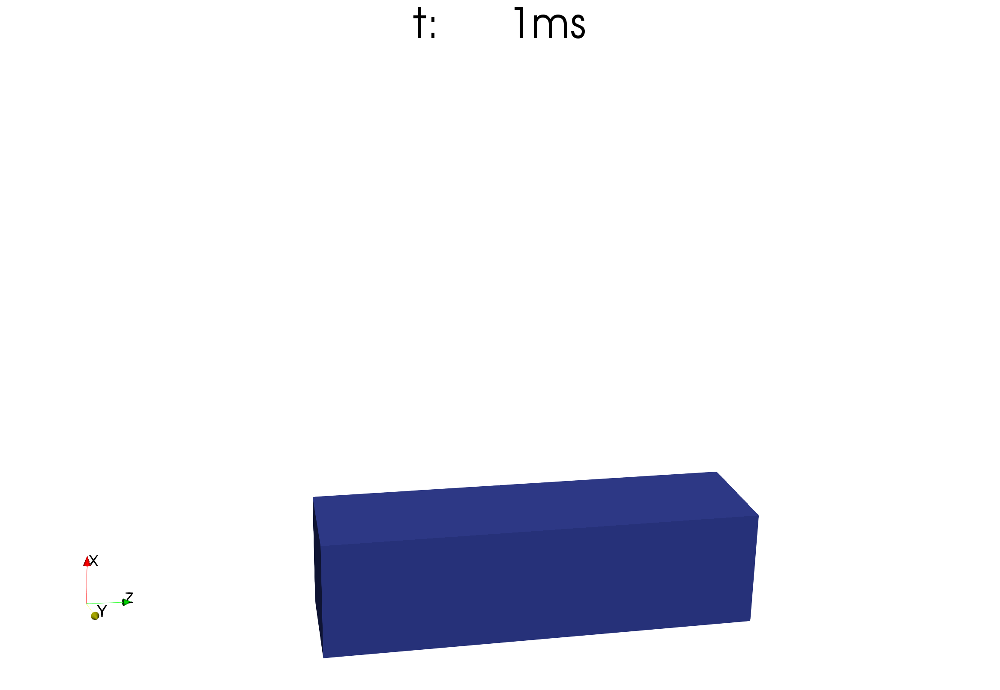
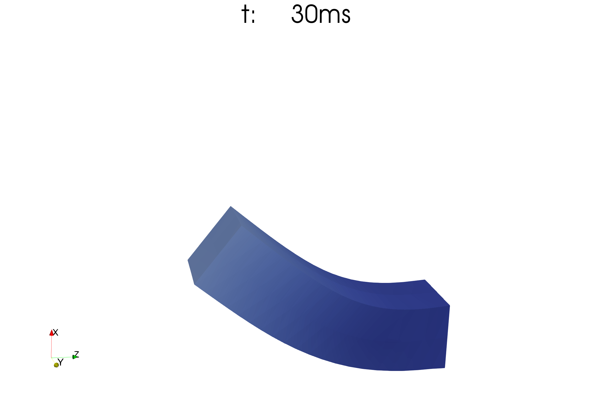
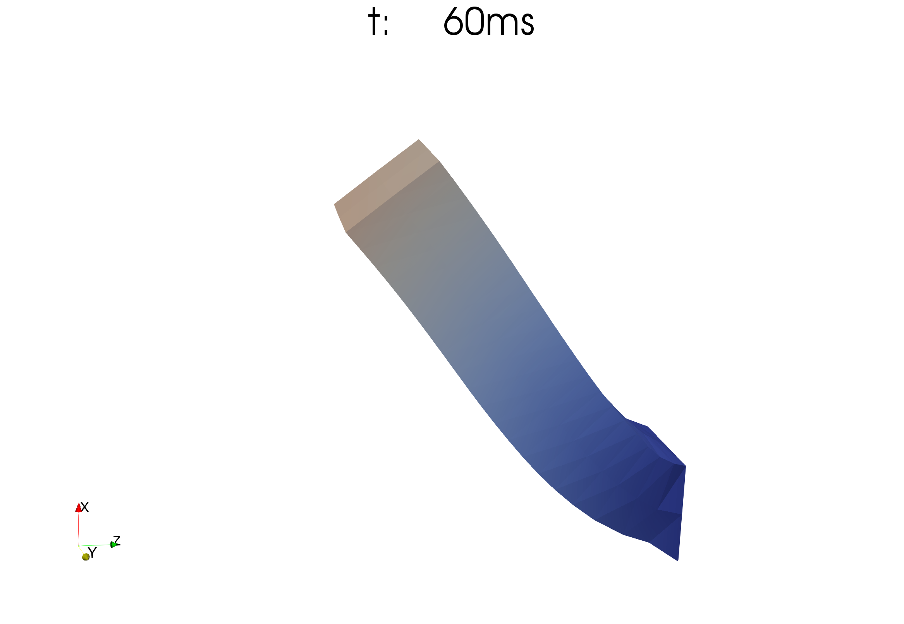
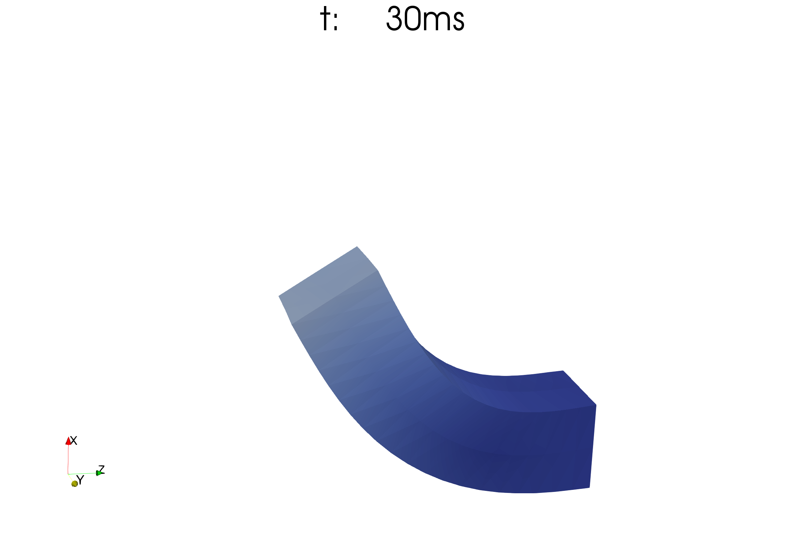
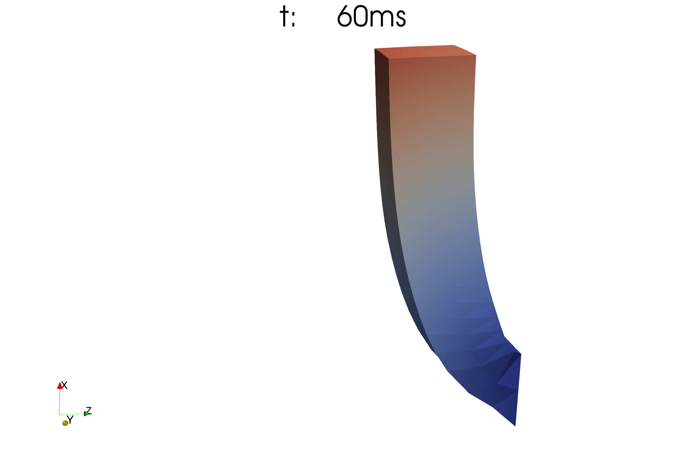

Boundary Conditions
Two types of boundary conditions are supported: Dirichlet and Neumann-type boundary conditions. They can be set in the settings for the following solvers:
Furthermore, in the DynamicHyperelasticitySolver, they can be changed over time.
Python settings
In all of the above mentioned solvers, the syntax for specifying Dirichlet and Neumann-type boundary conditions is the same. The following keys are used:
config = {
...
"dirichletBoundaryConditions": dirichlet_bc,
"neumannBoundaryConditions": neumann_bc,
"dirichletOutputFilename": "out/dirichlet_bc",
...
}
The options "dirichletBoundaryConditions" and "neumannBoundaryConditions" associate dofs and elements with prescribed values.
The option "dirichletOutputFilename" allows to specifiy a file name where the Dirichlet boundary conditions will be written to, mainly for visualization.
In order to not specify any boundary conditions, use an empty dict for Dirichlet boundary conditions and an empty list for Neumann boundary conditions:
"dirichletBoundaryConditions": {},
"neumannBoundaryConditions": [],
"dirichletOutputFilename": None,
Dirichlet Boundary Conditions
Dirichlet boundary conditions fix several degrees of freedom to prescribed values.
The option has to be a Dict with {<dof no>: <value>} entries. Here, the <dof no> refers to the degrees of freedom (dofs) in the mesh for which the value should prescribed.
The numbering of dofs follows different schemes for structured, unstructured and composite structured </settings/mesh> meshes.
Structured Meshes
Structured meshes, i.e. Mesh::StructuredRegularFixedOfDimension<D> and Mesh::StructuredDeformableOfDimension<D> have a linear (1D), rectilinear (2D) or cuboid (3D) shape.
The numbering of nodes and dofs follows this regular structure. It starts with 0 and proceeds fastest in x or i-direction, then (for 2D and 3D) in y or j-direction, then (for 3D) in z or k-direction.
If the mesh has \(n_x \times n_y \times n_z\) nodes or dofs, then a contiguous index of all dofs or nodes is given by \(k\, n_x \, n_y + j \, n_x + i\) for \(i = 1, \dots, n_x, j = 1, \dots, n_y, k = 1, \dots, n_z\).
For 1D meshes the numbering is trivial. Examples for 2D and 3D structured meshes are given for linear elements in Fig. 99 and for quadratic elements in Fig. 100.

Fig. 99 Numbering of nodes and dofs for a linear structured mesh. The left mesh has \(6\times 5 = 30\) nodes with numbers from 0 to 29. The right mesh has \(5\times 5\times 5=125\) nodes with numbers from 0 to 124.

Fig. 100 Numbering of nodes and dofs for a quadratic structured mesh. The numbering is the same as for linear elements, only the element boundaries are different.
The number of nodes in a mesh depends on the ansatz functions as visualized in Fig. 101.
{kind=link}
Fig. 101 1D ansatz functions and resulting elements. For linear and Hermite ansatz functions, 1/2/3/\(d\) D elements have 2/4/8/\(2^d\) nodes. For quadratic ansatz functions, 1/2/3/\(d\) D elements have 3/9/27/\(3^d\) nodes.
For Lagrange ansatz functions, every node has exactly one dof. Therefore dof numbers and node numbers are the same. For cubic Hermite ansatz functions, a 1D element has 2 dofs on every node. As can be seen in Fig. 101 (bottom left), one dof corresponds to the function value (this is the first dof) and one dof corresponds to the first derivative of the discretized function (this is the second dof). Consequently, when 2D and 3D elements are constructed by tensor product of 1D elements, the 2D nodes get \(2^2=4\) dofs and the 3D nodes get \(2^3=8\) dofs.
The dof numbering proceeds along the nodes as usual. For every node, all dofs are enumerated. The first dof per node is always the function value, the rest are the (combined) derivatives. For a function \(f\) in 2D the dofs per node are \((f,\partial_x f,\partial_y f, \partial_x \partial_y f)\), analogous for 3D with function value and 7 combined derivatives. An exemplary numbering scheme is shown in the following Fig. 102.

Fig. 102 Dof numbering for 2D Hermite elements. The mesh has \(6 \times 5=30\) nodes and therefore \(4\cdot 30 = 120\) dofs.
The dof numbers are needed to specify the Dirichlet boundary conditions in the settings, e.g. as "dirichletBoundaryConditions": {<dofA>: <value>, <dofB>: <value>, ...},.
Negative dof no.s are interpreted as counted from the end, i.e. -1 is the last dof, -2 is the second-last etc.
The <value> is a list of as many entries as the solution field has components. For example, for the normal FiniteElementMethod, this is typically one component. Then, <value> is either a list with one entry, such as [0] or simply the value itself (0).
For the FiniteElementMethod that is used inside the 3D QuasiStaticLinearElasticitySolver, <value> is a list of three components for the displacements in the three coordinate directions, e.g. [0,5,0].
The same holds for the Hyperelasticity. For the Dynamic hyperelasticity, the number of components is 6, comprising 3 displacements and 3 velocities, e.g. [0,0,0,None,None,None].
None can be used in such a list of components for a particular component that should not be prescribed. In the example [0,0,0,None,None,None] of a dynamic mechanics formulation only the first three components are prescribed, i.e. the displacements are fixed to 0.
Another example is the following, where for a three-component FiniteElementMethod, the dofs 0, 5 and 7 and the last degree of freedom are set to some values. For dof 5, only the first component is prescribed.
# define the dict directly
dirichlet_bc = {
0: [1,2],
5: [3,None],
-1: [5,6]
}
dirichlet_bc[7] = [7,7] # change the dict later, this syntax is also possible
config = {
...
"dirichletBoundaryConditions": dirichlet_bc,
#"dirichletBoundaryConditions": {0: [1,2]}, # or define the values inline like this
...
}
Numbering of Degrees of Freedom in Parallel Execution
When the program is run with multiple processes, each process stores and computes only a part of the domain, its own subdomain. The boundary conditions can either be specified for the whole domain or only for the local subdomain. In the latter case, the boundary conditions specification is typically different on each process.
The option inputMeshIsGlobal decides which of the two cases is used. With "inputMeshIsGlobal": True the dofs are interpreted as global dof no.s and each processes only picks the dofs that it needs from the global specification of boundary conditions.
However, if inputMeshIsGlobal is set to False, the specified dofs are interpreted as local numbers in the subdomain. Then you have to specify values also for the ghost dofs. This means that you have to specify the same prescribed nodal values for a node on every process whose subdomain is adjacent to that node.
In the example in Fig. 103, a mesh with \(7 \times 5\) nodes is partitioned to two processes. The local dof numbers are given in blue. Process 0 has ghost dofs shown by the red numbers. If, e.g., the value of the third-to-last dof in the top row should be prescribed, you have to set both dof 24 on rank 0 and dof 12 on rank 1 to the same prescribed value as both subdomains are adjacent to this node.

Fig. 103 Domain partitioned to two processes with the MPI ranks 0 and 1. Local dof nos. in blue, ghost dofs in red.
In general, the local numbering and determination which nodes are ghost and non-ghost is as follows. The subdomains are created by a partitioning of the elements, i.e., every element is assigned to exactly one subdomain. All the nodes that are adjacent to these elements are contained in the subdomain, either as a non-ghost node or as a ghost node. Every node is a non-ghost node in exactly one subdomain. It is the subdomain on the process with the highest number that contains the node, i.e. in the x-y-z grid the subdomain most to the right, back and top. The node is a ghost node on all other subdomains that contain it.
The local numbering follows the same scheme where the i coordinate advances fastest, then the j, then the k coordinate. At first, all non-ghost nodes are numbered, starting from 0 in each subdomain. Then the numbering continues with remaining ghost nodes following the same i,j,k order.
A more involved example is given in Fig. 104.

Fig. 104 Local node no.s on 6 subdomains of the mesh with \(5 \times 4\) elements from Fig. 99. Ghost nodes are indicate by red circles and numbers, non-ghost nodes are blue.
When the local numbering is used, the Python settings file has to specify different values for different processes. This can be achieved by using if statements on the own MPI rank no. Each process gets an MPI rank no., starting with 0 for the first process. The number for processes and the own rank no. can always be determined by adding the following to the settings. Then, rank_no can be used to distinguish the processes.
# parse rank arguments
rank_no = (int)(sys.argv[-2])
n_ranks = (int)(sys.argv[-1])
Unstructured Meshes
For unstructured meshes, the ordering of the dofs cannot follow an i,j,k iteration scheme such as for structured meshes. The ordering of the nodes and dofs is defined when the mesh is specified. In an unstructured mesh, every element explicitely stores the node numbers of its adjacent nodes. (For structured meshes this information was implicitly given by the dimensions and partitioning of the mesh).
Unstructured meshes can be created differently. They can be read from *.ex files, which are defined within the OpenCMISS framework. These files contain the information about the node numbers for each element. They can also be directly specified in the Python settings using elements and node positions (see UnstructuredDeformable for details).
Once the node numbers are known, the transfer from node numbers to dof numbers is the same as for structured meshes. The dofs per node are simply consecutively numbered. (This is relevant only for Hermite elements anyways.)
Composite Meshes
For composite meshes the numbering proceeds contiguously through all sub mesh. This means numbers 0 to nDofsMesh0-1, where nDofsMesh0 is the number of dofs in the first submesh directly map to the dofs of the first submesh. Then the numbers nDofsMesh0 to nDofsMesh0+nDofsMesh1-1 map to the second sub mesh and so on.
An example with two submeshes is given in Fig. 105.
Note, that negative values therefore count from the end of the last submesh, i.e. -1 specifies the last dof of the last submesh. In the example, -1 would be equivalent to 36.

Fig. 105 2D quadratic composite mesh with two submeshes. The numbers within the second submesh are shown in green, however, there is nothing different between blue and green dofs.
Dirichlet Output Filename
The option "dirichletOutputFilename" allows to specify a filename where the Dirichlet Boundary conditions will be written to.
The file name will have the ending “.vtp”, which indicates a VTK file to be viewed in ParaView. It contains the prescribed nodes with the prescribed values.
This is useful to debug the dofs and the assigned Dirichlet values.
The file contains the following information:
Spatial location of the nodes where Dirichlet boundary conditions are specified. This allows them to be visualized as spheres.
Prescribed value. Note, that the value will be inf where
Noneis specified.Partition, i.e. rank no. of the process that owns the boundary condition.
If this option is set to the empty string, "", or to None, no such file will be created.
Neumann Boundary Conditions
Neumann boundary conditions are needed for specification of fluxes or traction forces in mechanics formulations. The Neumann boundary conditions are specified on surfaces. In general, the surface is given by a face of an element. For 3D meshes, a face is a 2D surface. For 2D meshes, the face is a line. For 1D meshes, face refers to a point.
If the prescribed values are interpreted as flow over the face, a scalar value is usually needed. If the values is interpreted as traction force, then a vector should be specified. In this case, a simplification is possible if the force should act normal to the surface.
The given object is a list of dicts as shown below. Each dict specifies one surface and its prescribed value.
neumann_bc = [
{
"element": 0, # local element no, negative values count from the end
"face": "2-", # face on which the neumann bc should act
"constantVector": [1,0,0], # specify only one of "constantVector", "constantValue" and "dofVectors"
"constantValue": 0,
"dofVectors": {0:[1,0,0], 1:[2,0,0], 3:[2,1,0]},
"isInReferenceConfiguration": True, # for dynamic hyperelasticity, if the traction is interpreted as specified in reference configuration or current configuration
},
{...} # other dicts for prescribed values on more surfaces
]
elementis the local element number of the element which has the face for which to specify the Neumann boundary condition.facespecifies the face on which the Neumann boundary condition will act. Possible values are “0-”, “0+”, “1-”, “1+”, “2-”, “2+”, where 0,1,2 stand for the x, y and z coordinate axis and “-” or “+” stand for negative or positive direction. Note that a 3D element has all 6 faces. A 2D element only has the faces “0-”, “0+”, “1-” and “1+”. A 1D line element only has “0-” and “0+” which mean left end point and right end point.
The value to be prescribed can be given by either of three posibilities:
constantVector: This is a vector, useful e.g. for traction or forces. If for the HyperelasticitySolver or DynamicHyperelasticitySolver the option “divideNeumannBoundaryConditionValuesByTotalArea” is set to True, this vector is interpreted as a total force and will be scaled down automatically to reflect the actual surface size. If this option is False, the vector specifies a constant surface traction of the whole surface, as one would expect. The direction is always given in reference configuration. Note that you are responsible for the direction of the vector, if it points inwards or outwards of the domain.constantValue: For problems with only 1 component, this is the natural way to specify an outward flux. For problems with more components, i.e. mechanics, the constant value will be a factor to the outward normal. By this it is easily possible to specify loads orthogonal to the surface.dofVectors: This gives the most flexibility in specifying the values. It is a dict where the key is the node/dof number on the surface element and the value specifies the traction vector on that node. In the given example, only the nodes 0, 1 and 3 have a Neumann boundary condition value applied.
Especially for the mechanics problems, it is often convenient to use Python list comprehension to construct the neumann_bc object:
nx = ... # number of elements in x direction
ny = ... # number of elements in x direction
nz = ... # number of elements in x direction
k = nz-1 # top element
# the following specifies a constant surface load of 1 pointing upwards and acting on the top surface of the whole 3D box
neumann_bc = [{"element": k*nx*ny + j*nx + i, "constantVector": [1,0,0], "face": "2+"} for j in range(ny) for i in range(nx)]
The numbering of elements uses the same scheme as the numbering of nodes. This means that element numbers increase fastest in x or i-direction, then in y or j direction and slowest in z or k direction. It is easier, because no ghosts have to be considered. An example is given in the left side of Fig. 106.

Fig. 106 Left: element numbering for a linear 2D mesh. Right: local numbering if the domain is partitioned for 4 processes.
When running the program in parallel the same for the node numbers also holds for the element numbers.
As previously mentioned, the element numbers are interpreted as global numbers for "inputMeshIsGlobal": True and as local numbers for "inputMeshIsGlobal": False.
The local numbering of elements starts from zero for each subdomain, as shown in the example on the right of Fig. 106.
The “face” that needs to be specified is indicated by one of “0-”, “0+”, “1-”, “1+”, “2-”, “2+”, as mentioned above. The faces are visualized in Fig. 107.

Fig. 107 Faces for specifying Neumann boundary conditions on 1D, 2D and 3D meshes.
Reference or current configuration
Traction boundary conditions can be either given in reference configuration (default) or in the actual configuration. For static problems there is no difference, as the system starts in reference configuration. However, for dynamic problems Neumann boundary conditions specified in reference configuration create “moving loads” that keep their angle relative to the surface, while the surface moves.
To specify traction and forces that also point in the same global direction, they should be specified in the current configuration.
The option isInReferenceConfiguration controls whether the specified boundary conditions on an element are “moving loads” in reference configuration (True) or fixed loads in actual configuration (False).
The mapping between the traction \(T\) in reference configuration and the traction \(t\) in current configuration is given by the inverse deformation gradient:
This transformation is computed in every timestep if isInReferenceConfiguration is set to False on any Neumann BC element. This may slow down the computation a little bit.
When working with traction, the "constantVector" option is best suited as it directly specifies the direction of the traction. The option "constantValue" is also possible and corresponds to a load in normal direction. This normal direction, however, is set initially in the reference configuration and not updated during the simulation.
The following figures illustrate the difference between specified Neumann boundary conditions in reference and current configurations. The first image shows a horizontal rod in its reference configuration. A traction force in positive x direction is specified on the left surface. The first row shows the simulation where the traction force is specified in current configuration and, thus, always points “upwards”. The second row shows the simulation with the exact same parameters, except the traction force is in reference configuration. It always points horizontal at the surface. As a result the rod bends more to the right.
Traction in current configuration (always pointing upwards):
  Traction in reference configuration (always pointing orthogonal to the rod):
 
{kind=link}
{kind=link}
{kind=link}
{kind=link}
{kind=link}
How to run this simulation:
cd $OPENDIHU_HOME/examples/electrophysiology/fibers/fibers_contraction/with_tendons_precice/meshes
./create_cuboid_meshes.sh # create the cuboid mesh
cd $OPENDIHU_HOME/examples/electrophysiology/fibers/fibers_contraction/with_tendons_precice/traction_current_or_reference_configuration
mkorn && srr # build
./muscle_precice settings_current_configuration.py ramp.py
./muscle_precice settings_reference_configuration.py ramp.py